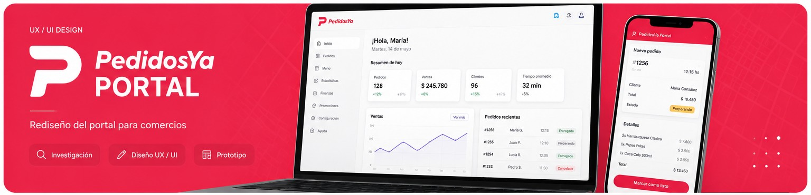

ARQA Furniture
Website and e-commerce experience for a furniture brand.

Pilar Beckman
Here are some of the UX/UI and web development projects I have worked on.
Website and e-commerce experience for a furniture brand.
Mobile application designed to improve healthcare accessibility for older adults.

UX/UI redesign focused on improving the experience of merchants and supermarkets.
